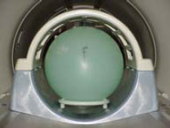
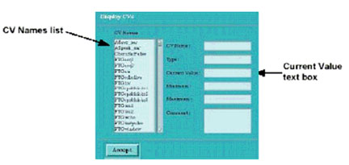
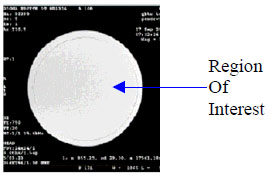

Operating Documentation
Direction 5500113, Rev# 3
Discovery MR450 1.5T Service Methods
Module Version 4.0, Version Date 5/18/09
Operating Documentation |
| Required Persons | Preliminary Reqs | Procedure | Finalization |
|---|---|---|---|
| 1 | Not Applicable | 15 mins | Not Applicable |
Follow this process to prepare for the SNR test using MR450 1.5T Split Top Head Coil (5182594).
| NOTE: | The split head coil can be used in one (1) mode of operation and has one (1) coil name: HEAD. Refer to the Data Sheet (see Table 3) to understand the data required to calculate the individual element SNR. All ROI measurements are made on the individual element images, not on the composite image. The image quality check uses two different protocols for signal and noise image acquisition. The signal scan is an FSE sequence used to minimize susceptibility and B0 inhomogeneity effects. The noise scan is a GRE sequence that has a Control Variable (do_noise) to eliminate the transmit RF completely during the scan. The signal scan must be run prior to the noise scan as the R1, R2 and TG values from the signal scan are used for the noise scan. |
| Item | Qty | Effectivity | Part# | Manufacturer | |
|---|---|---|---|---|---|
| DQA-HEAD 1.5T SNR Phantom | 1 | - | 2321556 | - | |
| Condition | Reference | Effectivity |
|---|---|---|
Check the system coil configuration for the HEAD coil configuration. If Head has not been installed, select HEAD from the list of available coils and [Install]. | - | - |
The Quality Assurance (QA) check should be performed upon receipt of the coil to establish a baseline of coil performance. The procedure should be repeated at regular intervals. Use this procedure to position the Split Top Head Coil for a QA check.
| ||||
| Patient burns may result from coil to coil coupling. | ||||
Remove any other coil or unused accessory device from the magnet.
Position the Split Head Coil on the patient table.
Place the posterior half of the coil at the top of the patient cradle.
Make sure the cables extend into the magnet.
Lock the base plate into the table slots.
| NOTE: | The cables from the quick-disconnect box to the head coil should always be straight, with no crossovers or loops evident from the outside. |
Unlock and remove the top half of the coil by depressing the latches on either side of the coil.
Remove any pads from the coil.
Mount the phantom onto the phantom positioner and place on the phantom pad.
Slide the pad, positioner, and phantom onto the coil base.
Reattach the top half of the coil.
Slide the phantom positioner so the landmarks on the phantom positioner align with those on the coil.

At the magnet, press Alignment Light to turn on the light.
Move the cradle to align the coil with the alignment lights.
Press Landmark to communicate the region of interest center to the system.
Press Move to Scan to move the coil to scan position. Ensure the coil cable does not get snagged.
Remove any other coil or unused accessory device from the magnet.
Position the Split Head Coil on the patient table.
Unlock and remove the top half of the coil by depressing the latches on either side of the coil.
Remove any pads from the coil.
Mount the phantom onto the phantom positioner and place on the phantom pad.
Slide the pad, positioner and phantom onto the coil base.
Reattach the top half of the coil.
Slide the phantom positioner so the landmarks on the phantom positioner align with those on the coil.
At the magnet, press alignment light to turn on the light.
Move the cradle to align the coil with alignment lights.
Press landmark to communicate the region of interest center to the system.
Press move to scan to move the coil to scan position.
The signal scan is an FSE-XL sequence used to minimize susceptibility and inhomogeneity effects. The signal scan must be run prior to the noise scan as the R1, R2 and TG values from the signal scan are used for the noise scan. Use this procedure to acquire a signal scan for a QA check.
Click the Scan Rx Desktop icon on the control panel.
Click [New Pt] in the Patient Register area. The Patient Information area appears.
Complete the Patient ID, Patient Name, and Weight text boxes.
Enter geservice in the Patient ID text box.
Enter snr check in the Patient Name text box.
Enter 111 lbs or 50 kg in the Weight text box.
Select protocol.
Click [Save] then [Start Exam].
Enter parameters from signal protocol.
Click [Save Rx].
Select [Auto Prescan].
Take note of the R1, R2 and TG values on Table 3.
| NOTE: | R1 should equal 11, and R2 should equal 14. If not, run Manual Prescan and adjust the R1 and R2 values. |
Click [Scan].
Click the scan Rx desktop icon on the control panel.
Click (New Pt) in the Patient Register area.
Complete the Patient ID, Patient name and Weight text boxes.
Click (Patient Position).
Enter the parameters from the Signal protocol.
Click (Save Series) to close the current prescription window.
Click (Prepare to Scan) to download the acquisition.
Click (Auto Prescan).
Take note of the R1, R2 and TG Values on Table 3.
Click (Scan).
The noise scan is a GRE sequence that uses a Control Variable to eliminate the transmit RF completely during the scan. A signal scan must be run prior to the noise scan as the same R1, R2 and TG values must be used for both the signal and noise scans. Do not run an Auto Prescan prior to the noise scan as the values will be changed. Use this procedure to acquire a noise scan for a QA check.
Copy the signal scan series.
Select the signal series in the Rx Manager.
Right-click and drag to select Paste.
Click [View Edit]. This allows the user to edit the parameters of the copied series.
Enter the parameters from the Noise protocol. Refer to QA References in the appendix for the Signal and Noise Protocols.
Click [Save Rx] to close the current prescription window.
Right-click [Research Operations...] and select User CVs. The Display CVs window opens.

Double-click rhformat in the CV Names list. Rhformat is entered in the CV Name text box. Alternatively, the user may type the name in the text box.
Enter 1 in the Current Value text box.
Double-click do_noise in the CV Names list. do_noise is then entered in the CV Name text box. Alternatively, the user may type the name in the text box.
Enter 1 in the Current Value text box. Turning this value on eliminates the transmit RF completely during the scan.
Click [Accept]. The Display CVs window closes.
Click [Manual Prescan]. Do not make any changes.
Click [Done]. The Manual Prescan window closes.
Click [Scan].
Copy the signal scan series.
Click (View Edit).
Enter the parameters from the Noise protocol. See Quality Assurance Protocols.
Click (Save Series) to close the current prescription window.
Click (Prepare to Scan) to download the acquisition.
Right-Click (Research Operations..) and select User CVs.
Double-click rhformat in the CV Names list.
Enter 1 in the Current Value text box.
Double-click do_noise in the CV Names list.
Enter 1 in the Current Value text box.
Click (Accept).
Click (Manual Prescan).
Click (Done).
Click (Scan).
A rectangular ROI should be used to measure the signal and noise on the acquired images. Both the signal and noise images can be measured in the Viewer. Use this procedure to measure the SNR on the signal and noise images.
Select the signal image in the Browser and click [Viewer]. The Viewer displays the signal image.
Click [Measure]. A menu appears, displaying available measurement methods.
Click the Circular ROI icon. A circular ROI is deposited on the center of the image. A circular ROI is selected as 80% of the phantom image.
Click and drag the small box to resize the ROI. The orientation of the ROI should be similar to the following figure. The mean, standard deviation, and area of the ROI appear in the lower right corner of the image.

Record the values for the mean signal on Table 3.
Select the signal image in the browser and click (viewer).
Click (Measure).
Click the rectangular ROI icon.
Click and drag the small box to resize the ROI.
Record the values for the mean signal on Table 3.
The SNR measurements must be greater than or equal to the following specifications.
Table 1: SNR Specifications
| Coil | SNR |
| 1.5T Split Head Coil | 29.1 |
No cable continuity checking is recommended for the connector because of pin damage concerns.
Not Applicable
Check the ODU connector for mechanical damage (e.g., cracks).
Inspect the contact pins in ODU connector for damage from improper insertion or corrosion, etc.
Make sure cradle latches and top latches are operating and still have adequate range of motion.
This section includes the quality assurance (QA) reference protocols necessary to perform the signal-to-noise-ratio (SNR) checks on the GE MR450 1.5T Split Head Coil.
Table 2: Signal and Noise Protocols
| Protocol | Signal | Noise |
| Patient Exam Information | ||
| Patient ID | geservice | geservice |
| Patient Name | HEAD | HEAD |
| Patient Weight | 111 lbs. (50 kg) | 111 lbs. (50 kg) |
| Patient Position | ||
| Patient Position | Supine | Supine |
| Patient Entry | Head First | Head First |
| Coil | HEAD | HEAD |
| Series Description | Signal | Noise |
| Imaging Parameters | ||
| Plane | Axial | Axial |
| Mode | 2D | 2D |
| Pulse Seq | FSE-XL | Gradient Echo |
| Imaging Options | None | None |
| Scan Timing | ||
| # of Echoes | 1 | 1 |
| TE | 17 | Min Full |
| TR | 500 | 50 |
| Flip Angle | N/A | 1 |
| Echo Train Length | 4 | N/A |
| Bandwidth | 31.25 | 31.25 |
| Acquisition Timing | ||
| Frequency | 512 | 512 |
| Phase | 256 | 256 |
| NEX | 1 | 1 |
| Phase FOV | 1 | 1 |
| Frequency Direction | A/P | A/P |
| Auto Center Frequency | Peak | Peak |
| AutoShim | On | On |
| Phase Correct | On | N/A |
| Scanning Range | ||
| FOV | 24 | 24 |
| Slice Thickness | 3 | 3 |
| Spacing | 1.5 | 1.5 |
| Start R/L, P/A Center, End R/L | 0.0 | 0.0 |
| Slices | 1 | 1 |
| Table Delta | 0.0 | 0.0 |
Use the table below to record the calculated signal to noise ratio (SNR) data obtained from the Functional Checks section.
Table 3: SNR Data Sheet
| Date | Mean Signal | Mean Noise | SNR |